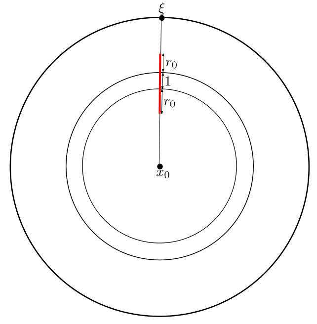

Counting orbit points (part 3): Asymptotics for convex-cocompact groups
Posted: Sun 12 January 2020Filed under mathematics
Tags: geometry dynamics topology
In the previous post, we proved Sullivan's shadow lemma, which gave us concrete estimates for special subsets of the boundary, namely shadows. Recall that the shadow of a ball of radius \(r\) based at \(y\), with the source at \(x\), denoted by \(\mathcal{O}_r(x, y)\), is the set of all points \(z\) in the boundary \(\partial \mathbb{H}^2\) such that a geodesic from \(x\) to \(z\) gets within distance \(r\) of \(y\). In the special case when \(y\) and \(x\) lie in the same orbit, we can estimate the Patterson-Sullivan measure of the shadow.
Lemma (Sullivan's shadow lemma): Let \(\Gamma\) be a non-elementary discrete group, and let \(\{\mu_x\}_{x \in \mathbb{H}^2}\) be a \(\Gamma\)-invariant conformal density of dimension \(\delta\). Then for any \(x\) there exists a large enough \(r_0\), such that for all \(r \geq r_0\), there exists a \(C > 0\), depending on \(r\) for which the following inequality holds for all \(\gamma \in \Gamma\).
We went through all the trouble of developing the machinery of Patterson-Sullivan theory to answer the following question.
Question: Suppose \(\Gamma\) is a convex-cocompact group1. Let \(x_0\) be a point in \(\Omega\), and let \(C(r)\) be the number of points in the orbit \(\Gamma x_0\) that lie within distance \(r\) of \(x_0\). What can we say about the asymptotics of \(C(r)\)? Do we have asymptotic upper and lower bounds? Can we determine what \(C(r)\) is asymptotically equal to?
One can prove a somewhat weak asymptotic upper bound without using any Patterson-Sullivan theory.
Proposition: \(C(r)\) is less than \(e^r\).
Proof: Since the group \(\Gamma\) is discrete, there exists a small enough constant \(r_0 > 0\), such that for any pair of points in the orbit \(\Gamma x_0\) are distance at least \(2r_0\) apart. Let \(S_r\) be the set of orbit points within distance \(r\) of \(x_0\), and let \(T_r\) be the union of balls of radius \(r_0\) around each point of \(S_r\). These balls don't intersect. Furthermore, all these balls lie in the ball of radius \(r+ r_0\) around \(x_0\). The volume of a ball of radius \(r\) is \(ke^{r}\) for a constant \(k\). We also note that the volume of \(T_r\) must be less than the volume of the ball of radius \(r+r_0\). This gives us that following inequality.
Rearranging the above inequality gives us the result. \(\square\)
Since we didn't have to work very hard to prove this inequality, it shouldn't come as a surprise that this bound is far from sharp. We can prove a better inequality by using Sullivan's shadow lemma. For simplicity, we'll first estimate the quantity \(A(r)\) instead, which is the number of orbit points contained in an annulus of inner radius \(r-1\) and outer radius \(r\) about the point \(x_0\). The value of \(C(r)\) can be obtained by just adding up the values of \(A(r)\), i.e. \(C(r) = \sum_{i=1}^{r} A(r)\).
Proposition: Suppose \(\delta\) is the critical exponent2 of \(\Gamma\). Then there exists a positive constant \(k\) which makes the following inequalities involving \(A(r)\) hold for all \(r\).
Proof: We begin by defining the set \(\alpha_r\): this is the set of elements \(\gamma\) in \(\Gamma\) such that \(\gamma x_0\) lands in the annulus of inner radius \(r-1\) and outer radius \(r\) about \(x_0\), i.e. \(\gamma x_0\) contributes to \(A(r)\). Consider the following function defined on \(\partial \mathbb{H}^2\).
Here, \(r_0\) is some big enough constant such that the Sullivan's shadow lemma applies. Note that this function depends on \(r\) as well, although the notation hides that dependence. That's because this function can be uniformly bounded above and below, independent of what \(r\) is. The lower bound of course, is just \(0\), which is trivial, but the upper bound requires proof. For any point \(\xi\) on the boundary, the value of \(S(\xi)\) will depend on how many balls of radius \(r_0\) about points in \(\alpha(r)\) intersect the geodesic going from \(x\) to \(\xi\). By an application of the triangle inequality, it suffices to count how many of these balls intersect a segment of length \(2r_0 + 1\) depicted in Figure 1.
|  |
This means that \(S(\xi)\) is at most the number of orbit points contained in a neighbourhood of radius \(r_0\) about the segment of length \(2r_0 + 1\). Since \(r_0\) is fixed, this quantity is bounded above no matter where the segment is on \(\mathbb{H}^2\), which proves the uniform upper bound on the function \(S\). Let us denote this uniform bound by \(J\). This uniform upper bound will help us get an upper bound on \(A(r)\). Observe that showing the upper bound didn't require convex-cocompactness, and in fact works for any discrete group \(\Gamma\).
We can use convex-cocompactness of \(\Gamma\) to get a positive lower bound on \(S(\xi)\) when \(\xi\) is in the limit set \(\Lambda(\Gamma)\). Since \(\Gamma\) is convex cocompact, the restriction of a fundamental domain to the convex hull of the limit set will be compact. Without loss of generality, we can assume the diameter of this compact set is less than \(1\) (otherwise we just make the annuli thicker). If \(\xi\) is in the limit set, the geodesic from \(x_0\) to \(\xi\) is always within distance \(1\) of some orbit point, since the closure of the orbits of the compact set contain the limit set. This means \(S(\xi) \geq 1\), and proves the lower bound.
We have, with some effort, managed to prove our main inequality, which holds for all \(\xi\) in the radial limit set, which has full measure.
We now integrate this with respect to the Patterson-Sullivan measure \(\mu_x\), and interchange the sum and the integral to get the following inequality.
Sullivan's shadow lemma also gives us another useful inequality.
Combining inequalities \eqref{eq:8} and \eqref{eq:9}, we get the inequalities we were after.
Summing up the \(A(r)\) gives us a similar inequality for \(C(r)\), which is what we wanted. \(\square\)
We have improved upon our earlier naïve inequalities in two ways. First, we now have a lower bound too. Secondly, if we know that \(\delta < 1\), we will have a strictly better inequality. Of course, this is only an improvement if we can actually find groups \(\Gamma\) where the critical exponent \(\delta\) is less than \(1\). Schottky groups provide a family of such examples.
Example: (Schottky groups) Let \(x_0 \in \mathbb{H}^2\) be a basepoint. Let \(a_1\) be a hyperbolic isometry whose axis passes through \(x_0\), and translates \(x_0\) by distance \(d\), where \(d\) is a constant we'll fix later, and \(a_2\) be another hyperbolic isometry with translation distance \(d\) whose axis also passes through \(x_0\), and is perpendicular to the axis of \(a_1\). For \(d\) large enough, \(a_1\) and \(a_2\) generate a free subgroup of \(\mathrm{PSL}(2, \mathbb{R})\): this will be our group \(\Gamma\). To get an upper bound on the critical exponent of \(\Gamma\), we need to relate the word length of elements of \(\Gamma\) to the distance they translate \(x_0\) by. Suppose we had the following inequality for all elements \(\gamma\) in \(\Gamma\).
We could use this to determine for what values of \(s\) does the following infinite sum converge (recall that this infinite sum showed up in the construction of the Patterson-Sullivan measure).
Clearly, for large values of \(s\), this converges, to no one's surprise. But since we want the critical exponent to be less than \(1\), would like this to converge for \(s < 1\). We could make that happen if we \(d'\) could get arbitrarily large: we claim that as \(d\) gets larger, so does \(d'\).
To prove the above claim, we need to do some elementary hyperbolic geometry. Firstly, observe that if the world length of \(\gamma\) is \(n\), then the geodesic joining \(x_0\) to \(\gamma x_0\) goes through \((n-2)\) translates of the fundamental domain of \(\Gamma\). The boundary of the fundamental domain is composed of \(4\) biinfinite geodesics, such that the distance between each pair is bounded below, away from \(0\). That lower bound on the distance is where \(d'\) comes from. One can explicitly relate \(d\) and \(d'\) in this manner by constructing a hyperbolic right pentagon. The details of this construction are elementary, and left to the reader, and after that point, one uses the formula for hyperbolic right angled pentagons (see Thurston's, The Geometry and Topology of Three-Manifolds) to get the formula for \(d'\). Roughly, as \(d\) gets larger, \(d'\) is approximately \(2d\), which certainly approaches infinity, proving our claim.
This example shows us that Patterson-Sullivan theory did give us a strong estimate of the count of the orbit points. This concludes the three part series on counting orbit points. All of this material can be found in Dennis Sullivan's excellent paper, titled The density at infinity of a discrete group of hyperbolic motions.
-
A convex cocompact group is a discrete subgroup of \(\mathrm{PSL}(2, \mathbb{R})\) that acts cocompacty on the convex hull of its limit set. The surface one gets by quotienting the hyperbolic plane by a convex-cocompact group is a hyperbolic surface with no cusps, and finitely many flares, which have infinite area, and look like one of the ends of \(\mathbb{H}^2\) modulo an hyperbolic element. ↩
-
See the previous post for the definition of critical exponent. ↩
Counting orbit points (part 2): Patterson-Sullivan theory
In the previous post, we saw how to get an asymptotic count of orbit points under a lattice action, i.e. a finite covolume Fuchsian group. To do so, we needed the fact that the geodesic flow on the associated quotient was mixing with respect to the Liouville measure. That …
read moreCounting orbit points under group actions - Part 1
After 10 months of being unable to come up with anything interesting to post on the blog, I realized it might be a good idea use this blog to keep track of the math I've been working on. That way my blog can act as a public version of my …
read more